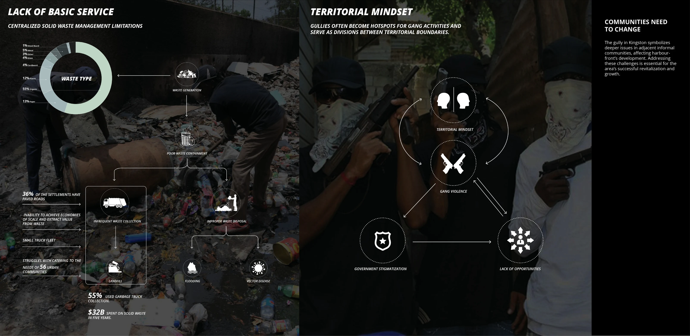
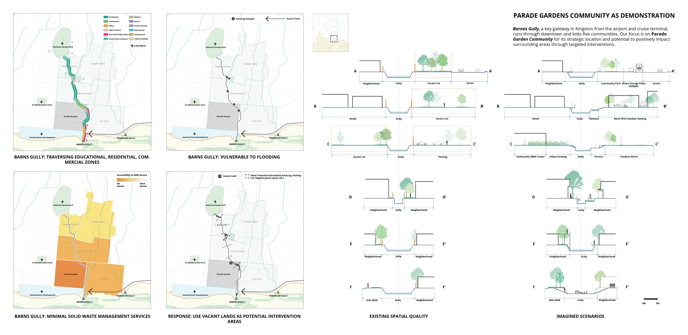
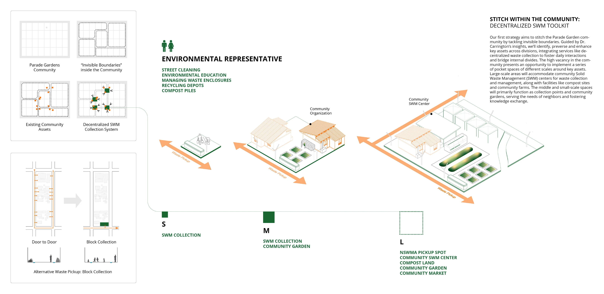
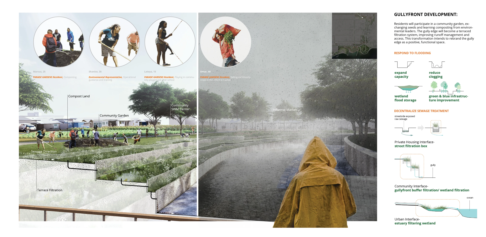
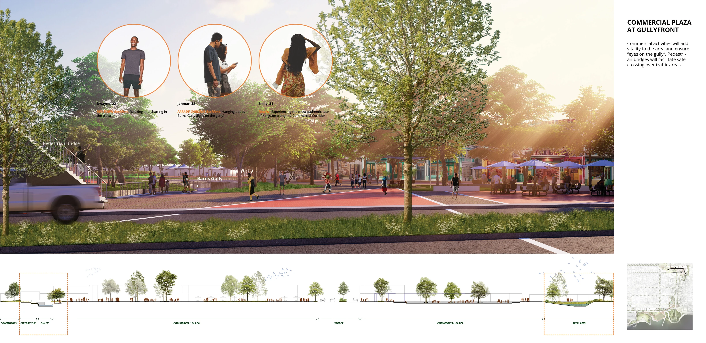
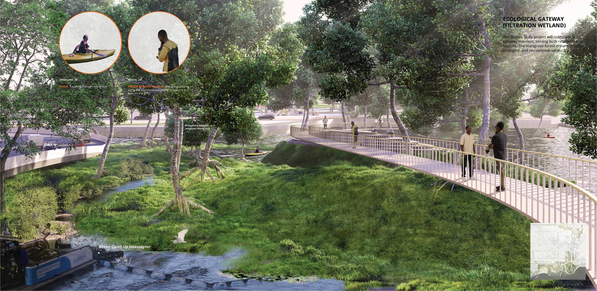
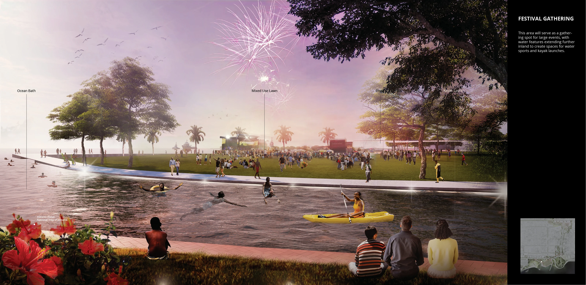
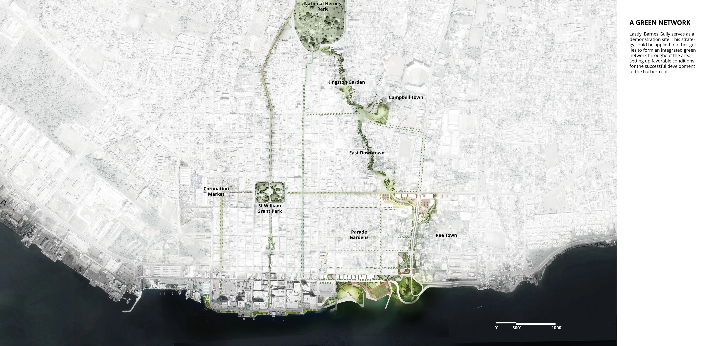

- Location
- Barnes Gully and Parade Gardens, Kingston, Jamaica
- Year
- 2024
- Type
- Urban design
- Design team
- Zicheng (Kai) Zhao, Jiewen Hu

Stitching Kingston, Community to Coast
Stitching Kingston connects communities to the harbourfront through a network of gullies, combining community-led waste management, public spaces, and decentralized water filtration along Barnes Gully.
Project details
Project statement
Jamaica has long grappled with challenges in developing its harbourfront, primarily hindered by solid waste pollution and territorial mindset from surrounding communities. Our research indicates that for successful redevelopment, solutions must extend beyond the immediate harbourfront area to address these broader issues. Central to these challenges is the stormwater drainage system—gullies that cut through the city and channel waste directly to the harbourfront. Notably, approximately 50% of the communities along these gullies are informal settlements, which have become hotspots for illicit activities including illegal dumping, raw sewage discharge, and gang violence. These conditions reflect deeper systemic problems in these communities, such as inadequate waste management services, entrenched territorial mindsets, and limited economic opportunities.
Our vision aims to bridge community divisions by recognizing and enhancing existing community assets along sub-community boundaries and along the gullies, integrating essential public services. We propose using Barnes Gully as a pilot project. Strategically positioned through downtown Kingston and serving as a crucial access point from the airport and cruise ship terminals. We zoom into a part of the Barnes Gully intersecting with the Parade Gardens community, chosen for its critical location as a gateway community and its proximity to the harbourfront.
We plan to bridge internal community divisions by introducing a decentralized waste collection system and enhancing community assets along boundaries by proposing community-driven programs. Life Yard, an influential local organization, has demonstrated success in uniting the community by recycling waste, and urban farming, serving as a model for our community-led waste management efforts. Building on this, we plan to set up a community-led solid waste management organization. This will involve electing environmental representatives to manage waste collection, education, and maintenance, trained, and supported by the NSWMA and partners. Green incentives will enable residents to exchange recyclables for planting seeds, with the help of the National Tree Planting Initiative will enhance community green infrastructure. Furthermore, we intend to utilize vacant spaces around these community assets to create pocket spaces for waste management centers and community gardens, fostering interaction and knowledge exchange. Secondly, our strategy also includes transforming the areas around Barnes Gully into a shared community resource. We will identify community assets along the gully and enhance them through proposed programs. We plan to develop commercial plazas at key points along the gully and introduce compost sites and gardens around educational facilities to amplify their impact. Additionally, addressing sewage pollution, we propose implementing a series of decentralized filtration strategies starting within the community and extending to a filtration buffer along the gully edges, to treat sewage before it reaches the gully. We also advocate for periodic cleanup initiatives led by local communities at the end of each gully.
Our comprehensive approach transforms the perception of gullies from negative to positive, potentially creating an integrated green network across the city. This initiative will not only address the environmental and social challenges but also lay the groundwork for the successful redevelopment of Jamaica’s harbourfront.






Drawings and images














